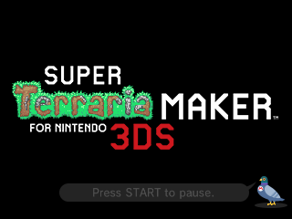
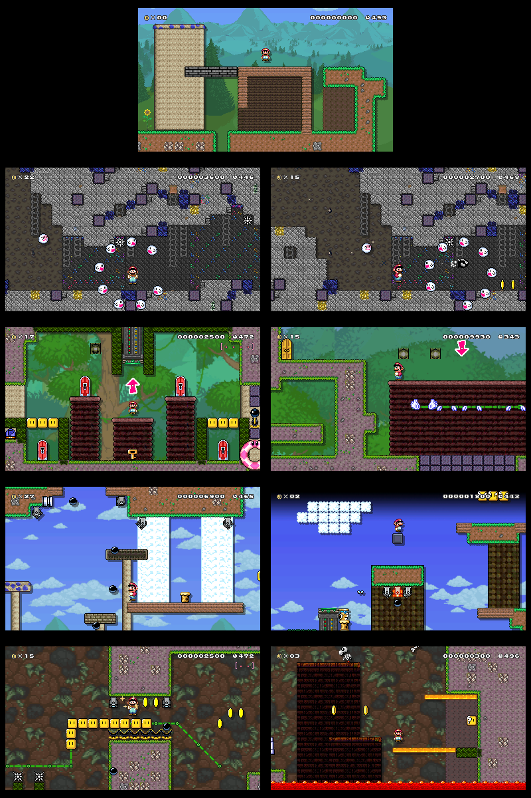

| Posted on 03-25-19, 11:38 pm by Sm-ArtThings |
|
 Okay so after learning that Terraria 3DS uses the exact same tile size as Mario Maker 3DS I was able to just go ahead and make a 3DS version of Terraria+Mario Maker myself using Tanookid's WiiU mod of the Surface and Underground as a base, though even those two have a few small changes in it. It replaces the SMW Theme and is still a WIP. There's parts I need help with but I likely wont get any which means those parts will remain unfinished. Areas: Overworld=Surface Underground=Underground Water=Nothing yet Ghost House=Jungle Airship=Sky Castle=Underground Jungle Images:  Issues: -nothing made for Water yet. (I still dont know how to arrange ground tiles so until I can get assistance with that Water just wont be made. My two major choices are making it the Ocean or a flooded Underground Corruption) -Jungle Background doesnt scroll continuously (as seen in screenshot. Also maybe I'd make it a night Jungle to make the lanterns stand out less.) -Beehive Semisolid doesnt scale correctly when enlarged (this is difficult because there is no way to make hive walls on the 3DS version, but all the available walls are underground where the lighting is inconsistent) Link: https://drive.google.com/open?id=1f3JUtx29SjHhqhjecN0sZbSLFABKFsG4 Credits: Tanookid for the base mod from https://mariomods.net/thread/658-terraria-maker that had Surface and Underground. Links where I post things including art so check me out (I'd also prefer these links be used if I were to be credited offsite): Twitter: https://twitter.com/SArtthings Deviantart: https://www.deviantart.com/sm-artthings |
| Comments |
|---|
|
falling upwards Posted on 03-26-19, 12:01 am
me like this.
|
|
Sm-ArtThings Posted on 04-12-19, 04:50 pm
me like this. Thanks. |
|
.NET Posted on 06-09-19, 03:29 pm
Can you send me the tilesets and BGS so I can import them to the Wii U version? (Overworld and underground are not neded, so does the music)
(EDIT NOTE:) Everything possible is neded, just still not music... |
|
Sm-ArtThings Posted on 06-09-19, 10:19 pm
The tiles are a bit different now btw. Gonna put them together.
In the meantime in terms of what I have left if you do have music and know what format they should be in for the 3DS version I'd love to get that to improve my version as well. Also the Water Theme is still basically not done, I did make a lot of stuff for it but still actually need the Ground Tiles (specifically for either Snow or Ice since I went with underground Ice Biome) but if you have tiles for underground Corruption that would be good as well. Regardless I should be able to put the tilesets/backgrounds together next time I get access to the PC they are on. |